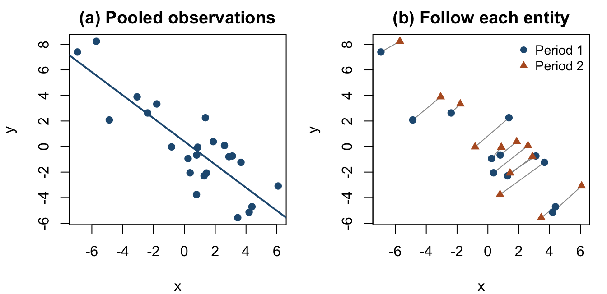
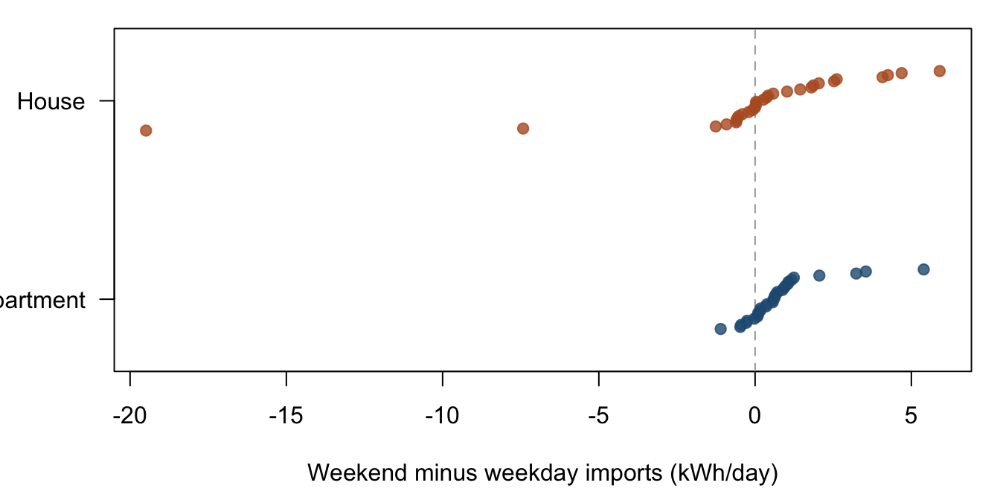
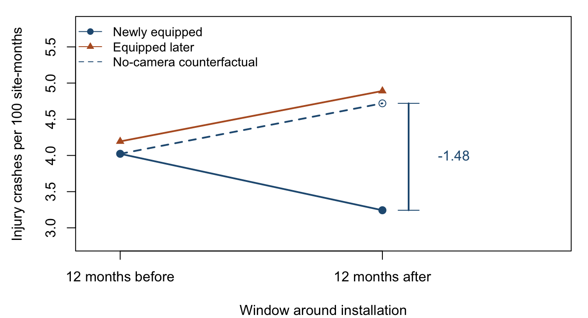

Chapter 5 Panel regressions
Prerequisites. Linear regression, omitted-variable bias, generalized least squares, instrumental variables, and hypothesis testing.
After working through this chapter, you should be able to:
- Recognize the structure of a panel dataset and distinguish pooled, fixed-effects, and random-effects models.
- Derive and interpret the within estimator.
- Explain when random-effects estimation is consistent and how it differs from fixed effects.
- Identify the source of bias in dynamic panel regressions and the role of internal instruments.
- State the identifying assumption behind difference-in-differences.
Roadmap. The chapter introduces panel notation and the main assumptions before presenting fixed-effects and random-effects estimators. It then studies dynamic panels and closes with programme-evaluation methods. The running application follows Swiss electricity meters: we compare weekend and weekday imports for the same installation. Simulations isolate the assumptions behind random effects and dynamic panels; a French speed-camera application illustrates difference-in-differences with later-treated comparison sites. Section 5.8 applies these ideas.
5.1 Specification and notation
A panel dataset follows the same entities across time. Entities are indexed by \(i\in\{1,\dots,n\}\) and periods by \(t\in\{1,\dots,T\}\). This repeated-observation structure lets us distinguish variation across entities from variation within an entity over time.
The linear panel regression model is: \[\begin{equation} y_{i,t} = \mathbf{x}'_{i,t}\underbrace{\boldsymbol\beta}_{K \times 1} + \underbrace{\mathbf{z}'_{i}\boldsymbol\alpha}_{\mbox{Individual effects}} + \varepsilon_{i,t}.\tag{5.1} \end{equation}\]
When running panel regressions, the usual objective is to estimate \(\boldsymbol\beta\).
Figure 5.1 illustrates why that distinction matters. Each entity is observed twice. In the simulation, \(y_{i,t}=\alpha_i+x_{i,t}+\varepsilon_{i,t}\), so the true slope is one. Entities with larger \(x\) tend to have lower \(\alpha_i\). Pooling the observations hides this heterogeneity and produces a negative slope; joining each entity’s observations reveals the positive within-entity relationship.
Code
n_panel <- 12
alpha_panel <- 5*rnorm(n_panel)
x_panel <- cbind(rnorm(n_panel),rnorm(n_panel))-.5*alpha_panel
y_panel <- alpha_panel+x_panel+.15*matrix(rnorm(2*n_panel),n_panel,2)
sim_panel <- data.frame(id=rep(seq_len(n_panel),2),
x=c(x_panel),y=c(y_panel))
panel_par <- par(mfrow=c(1,2),mar=c(4,4,2,1))
plot(y~x,sim_panel,pch=19,col="#245A81",main="(a) Pooled observations")
abline(lm(y~x,sim_panel),col="#245A81",lwd=2)
plot(range(x_panel),range(y_panel),type="n",xlab="x",ylab="y",
main="(b) Follow each entity")
segments(x_panel[,1],y_panel[,1],x_panel[,2],y_panel[,2],col="grey60")
points(x_panel[,1],y_panel[,1],pch=19,col="#245A81")
points(x_panel[,2],y_panel[,2],pch=17,col="#B65C28")
legend("topright",c("Period 1","Period 2"),pch=c(19,17),
col=c("#245A81","#B65C28"),bty="n",cex=.9)
Figure 5.1: Between-entity differences can conceal a positive within-entity relationship. Both panels show the same simulated observations. Grey segments join each entity’s two periods; the blue line in panel (a) is pooled OLS.
Running data: electricity imports at Swiss meters. AEC::CHelectricity records daily grid imports and exports in 2023–2024. We use the 30 apartment and 30 single-family-house meters in its compact panel and retain only complete daily import totals (Appendix 10.5). Our outcome is electricity drawn from the grid, in kWh per day. It is not total electricity use: on-site generation consumed directly is not measured by imports.
The question is simple: does a given installation draw more or less electricity from the grid on weekends? Meter effects absorb stable differences in equipment, building size and occupancy. Month–year effects absorb common seasonal and annual movements. Neither effect absorbs day-to-day weather or changes in occupancy, so we interpret the result as a calendar association.
Code
data(CHelectricity,package="AEC")
data(CHelectricity_meters,package="AEC")
elec_meters <- subset(CHelectricity_meters,selected_daily &
installation_type %in% c("Apartment","Single-family house"))
elec_panel <- subset(CHelectricity,meter_id %in% elec_meters$meter_id &
!is.na(import_kwh))
elec_panel$meter <- factor(elec_panel$meter_id)
elec_panel$month_year <- factor(format(elec_panel$date,"%Y-%m"))
elec_panel$weekend <- as.integer(elec_panel$weekday>=6)
elec_days <- table(elec_panel$meter)
stopifnot(!anyDuplicated(elec_panel[c("meter_id","date")]))There are 39,073 meter–day observations from 60 meters. A meter contributes between 85 and 731 days. Missing readings are not zero imports, and we do not fill them in. The resulting panel is unbalanced. The formulas below use a common \(T\) for clarity; for an unbalanced panel, means and observation counts use the available periods \(T_i\) for each entity. Selective missingness can still affect the estimates.
We will make use of the following notations: \[ \mathbf{y}_i = \underbrace{\left[ \begin{array}{c} y_{i,1}\\ \vdots\\ y_{i,T} \end{array}\right]}_{T \times 1}, \quad \boldsymbol\varepsilon_i = \underbrace{\left[ \begin{array}{c} \varepsilon_{i,1}\\ \vdots\\ \varepsilon_{i,T} \end{array}\right]}_{T \times 1}, \quad \mathbf{x}_i = \underbrace{\left[ \begin{array}{c} \mathbf{x}_{i,1}'\\ \vdots\\ \mathbf{x}_{i,T}' \end{array}\right]}_{T \times K}, \quad \mathbf{X} = \underbrace{\left[ \begin{array}{c} \mathbf{x}_{1}\\ \vdots\\ \mathbf{x}_{n} \end{array}\right]}_{(nT) \times K}. \] \[ \tilde{\mathbf{y}}_i = \left[ \begin{array}{c} y_{i,1} - \bar{y}_i\\ \vdots\\ y_{i,T} - \bar{y}_i \end{array}\right], \quad \tilde{\boldsymbol\varepsilon}_i = \left[ \begin{array}{c} \varepsilon_{i,1} - \bar{\varepsilon}_i\\ \vdots\\ \varepsilon_{i,T} - \bar{\varepsilon}_i \end{array}\right], \] \[ \tilde{\mathbf{x}}_i = \left[ \begin{array}{c} \mathbf{x}_{i,1}' - \bar{\mathbf{x}}_i'\\ \vdots\\ \mathbf{x}_{i,T}' - \bar{\mathbf{x}}_i' \end{array}\right], \quad \tilde{\mathbf{X}} = \left[ \begin{array}{c} \tilde{\mathbf{x}}_{1}\\ \vdots\\ \tilde{\mathbf{x}}_{n} \end{array}\right], \quad \tilde{\mathbf{y}} = \left[ \begin{array}{c} \tilde{\mathbf{y}}_{1}\\ \vdots\\ \tilde{\mathbf{y}}_{n} \end{array}\right], \] where \[ \bar{y}_i = \frac{1}{T} \sum_{t=1}^T y_{i,t}, \quad \bar{\varepsilon}_i = \frac{1}{T}\sum_{t=1}^T \varepsilon_{i,t} \quad \mbox{and} \quad \bar{\mathbf{x}}_i = \frac{1}{T}\sum_{t=1}^T \mathbf{x}_{i,t}. \]
5.2 Three standard cases
How the individual effect relates to the observed regressors determines the appropriate estimator. The following three cases separate pooled models, fixed effects, and random effects.
There are three typical situations:
- Pooled regression: \(\mathbf{z}_i \equiv 1\). This case amounts to the case studied in Chapter 4.
- Fixed Effects (Section 5.3): \(\mathbf{z}_i\) is unobserved, but correlates with \(\mathbf{x}_i\) \(\Rightarrow\) \(\mathbf{b}\) is biased and inconsistent in the OLS regression of \(\mathbf{y}\) on \(\mathbf{X}\) (omitted variable, see Section 4.3.2).
- Random Effects (Section 5.4): \(\mathbf{z}_i\) is unobserved, but uncorrelated with \(\mathbf{x}_i\). The model writes: \[ y_{i,t} = \mathbf{x}'_{i,t}\boldsymbol\beta + \alpha + \underbrace{{\color{blue}u_i + \varepsilon_{i,t}}}_{\mbox{compound error}}, \] where \(\alpha = \mathbb{E}(\mathbf{z}'_{i}\boldsymbol\alpha)\) and \(u_i = \mathbf{z}'_{i}\boldsymbol\alpha - \mathbb{E}(\mathbf{z}'_{i}\boldsymbol\alpha)\), with \(\mathbb{E}(u_i\mid\mathbf{x}_i)=0\). In that case, the OLS is consistent, but not efficient. GLS can be used to gain efficiencies over OLS (see Section 4.6.2 for a presentation of the GLS approach).
5.3 Estimation of fixed-effects models
When individual effects may be correlated with the regressors, the estimator must remove those effects rather than treat them as part of the disturbance. The fixed-effects approaches below do so through dummy variables, within transformations, or first differences.
Hypothesis 5.1 (Fixed-effect model) We assume that:
- The time-varying regressors retain full column rank after removing entity means; a common intercept and time-invariant regressors are absorbed by the entity effects.
- \(\mathbb{E}(\varepsilon_{i,t}|\mathbf{X},\boldsymbol\alpha)=0\), for all \(i,t\) (strict exogeneity conditional on the entity effects).
- We have: \[ \mathbb{E}(\varepsilon_{i,t}\varepsilon_{j,s}|\mathbf{X},\boldsymbol\alpha) = \left\{ \begin{array}{cl} \sigma^2 & \mbox{if $i=j$ and $s=t$},\\ 0 & \mbox{otherwise.} \end{array}\right. \]
These assumptions are analogous to those introduced in the standard linear regression:
- \(\leftrightarrow\) Hyp. 4.1, (ii) \(\leftrightarrow\) Hyp. 4.2, (iii) \(\leftrightarrow\) Hyp. 4.3 + 4.4.
In matrix form, for a given \(i\), the model writes: \[ \mathbf{y}_i = \mathbf{x}_i \boldsymbol\beta + \mathbf{1}_T\alpha_i + \boldsymbol\varepsilon_i, \] where \(\mathbf{1}_T\) is a \(T\)-dimensional vector of ones.
This is the Least Square Dummy Variable (LSDV) model: \[\begin{equation} \mathbf{y} = [\mathbf{X} \quad \mathbf{D}] \left[ \begin{array}{c} \boldsymbol\beta\\ \boldsymbol\alpha \end{array} \right] + \boldsymbol\varepsilon, \tag{5.2} \end{equation}\] with: \[ \mathbf{D} = \underbrace{ \left[\begin{array}{cccc} \mathbf{1}_T&\mathbf{0}&\dots&\mathbf{0}\\ \mathbf{0}&\mathbf{1}_T&\dots&\mathbf{0}\\ &&\vdots&\\ \mathbf{0}&\mathbf{0}&\dots&\mathbf{1}_T\\ \end{array}\right]}_{(nT \times n)}. \]
The linear regression (Eq. (5.2)) —with the dummy variables— satisfies the Gauss-Markov conditions (Theorem 4.1). Hence, in this context, the OLS estimator is the best linear unbiased estimator (BLUE).
Denoting by \(\mathbf{Z}\) the matrix \([\mathbf{X} \quad \mathbf{D}]\), and by \(\mathbf{b}\) and \(\mathbf{a}\) the respective OLS estimates of \(\boldsymbol\beta\) and of \(\boldsymbol\alpha\), we have: \[\begin{equation} \boxed{ \left[ \begin{array}{c} \mathbf{b}\\ \mathbf{a} \end{array} \right] = [\mathbf{Z}'\mathbf{Z}]^{-1}\mathbf{Z}'\mathbf{y}.} \tag{5.3} \end{equation}\]
When the number of entities \(n\) grows while \(T\) is fixed, the dimension of \(\boldsymbol\alpha\) also grows. Consequently, the usual fixed-dimensional OLS limit theorem cannot be applied to the full vector \([\mathbf{b}',\mathbf{a}']'\). Under strict exogeneity, cross-sectional independence, and standard moment and rank conditions, the within estimator \(\mathbf{b}\) of the common slope vector \(\boldsymbol\beta\) is consistent and asymptotically normal as \(n\rightarrow\infty\) with fixed \(T\). By contrast, each individual effect \(\alpha_i\) is estimated from only \(T\) observations and is generally not consistent when \(T\) remains fixed.
In practice, an estimator of the covariance matrix of \([\mathbf{b}',\mathbf{a}']'\) is: \[ s^2 \left( \mathbf{Z}'\mathbf{Z}\right)^{-1} \quad with \quad s^2 = \frac{\mathbf{e}'\mathbf{e}}{nT - K - n}, \] where \(\mathbf{e}\) is the \((nT) \times 1\) vector of OLS residuals.
There is an alternative way of expressing the LSDV estimators. It involves the residual-maker matrix \(\mathbf{M_D}=\mathbf{Id} - \mathbf{D}(\mathbf{D}'\mathbf{D})^{-1}\mathbf{D}'\) (see Eq. (4.3)), which acts as an operator that removes entity-specific means, i.e.: \[ \tilde{\mathbf{y}} = \mathbf{M_D}\mathbf{y}, \quad \tilde{\mathbf{X}} = \mathbf{M_D}\mathbf{X} \quad and \quad \tilde{\boldsymbol\varepsilon} = \mathbf{M_D}\boldsymbol\varepsilon. \]
With these notations, using the Frisch-Waugh theorem (Theorem 4.2), we get another expression for the estimator \(\mathbf{b}\) appearing in Eq. (5.3): \[\begin{equation} \boxed{\mathbf{b} = [\mathbf{X}'\mathbf{M_D}\mathbf{X}]^{-1}\mathbf{X}'\mathbf{M_D}\mathbf{y}.}\tag{5.4} \end{equation}\]
This amounts to regressing the \(\tilde{y}_{i,t}\)’s (\(= y_{i,t} - \bar{y}_i\)) on the \(\tilde{\mathbf{x}}_{i,t}\)’s (\(=\mathbf{x}_{i,t} - \bar{\mathbf{x}}_i\)). Each observation is compared with its own entity mean. Stable differences between entities disappear, including time-invariant observed characteristics. Strict exogeneity is still needed: demeaning does not remove time-varying confounding. Assumption (iii) gives the conventional covariance formula; clustered covariance estimates relax its error restrictions without changing the within coefficients.
The estimate of \(\boldsymbol\alpha\) is given by: \[\begin{equation} \boxed{\mathbf{a} = (\mathbf{D}'\mathbf{D})^{-1}\mathbf{D}'(\mathbf{y} - \mathbf{X}\mathbf{b}),} \tag{5.5} \end{equation}\] which is obtained by developing the second row of \[ \left[ \begin{array}{cc} \mathbf{X}'\mathbf{X} & \mathbf{X}'\mathbf{D}\\ \mathbf{D}'\mathbf{X} & \mathbf{D}'\mathbf{D} \end{array}\right] \left[ \begin{array}{c} \mathbf{b}\\ \mathbf{a} \end{array}\right] = \left[ \begin{array}{c} \mathbf{X}'\mathbf{y}\\ \mathbf{D}'\mathbf{y} \end{array}\right], \] which are the first-order conditions resulting from the least squares problem (see Eq. (4.2)).
First differences provide another way to remove entity effects. Subtract the previous observation from the current one: \[ \Delta y_{i,t}=(\Delta\mathbf{x}_{i,t})'\boldsymbol\beta+\Delta\varepsilon_{i,t}. \] The time-invariant \(\alpha_i\) cancels. With two periods, this gives the same slope as the within estimator; with more periods, the estimators generally differ. Even independent level errors generate dependence between adjacent differenced errors because they share an innovation. The covariance estimator must account for that transformation.
One can use different types of fixed effects in the same regression. Typically, one can have time and entity fixed effects. In that case, the model writes: \[ y_{i,t} = \mathbf{x}_{i,t}'\boldsymbol\beta + \alpha_i + \gamma_t + \varepsilon_{i,t}. \]
The LSDV approach (Eq. (5.2)) can still be resorted to. It suffices to extend the \(\mathbf{Z}\) matrix with additional columns (then called time dummies): \[\begin{equation} \mathbf{y} = [\mathbf{X} \quad \mathbf{D} \quad \mathbf{C}] \left[ \begin{array}{c} \boldsymbol\beta\\ \boldsymbol\alpha\\ \boldsymbol\gamma \end{array} \right] + \boldsymbol\varepsilon, \tag{5.6} \end{equation}\] with: \[ \mathbf{C} = \left[\begin{array}{cccc} \boldsymbol{\delta}_1&\boldsymbol{\delta}_2&\dots&\boldsymbol{\delta}_{T-1}\\ \vdots&\vdots&&\vdots\\ \boldsymbol{\delta}_1&\boldsymbol{\delta}_2&\dots&\boldsymbol{\delta}_{T-1}\\ \end{array}\right], \] where the \(T\)-dimensional vector \(\boldsymbol\delta_t\) (the time dummy) is \[ [0,\dots,0,\underbrace{1}_{\mbox{t$^{th}$ entry}},0,\dots,0]'. \]
The interpretation of these effects is particularly concrete in our running application.
Example 5.1 (Weekends at the same electricity meter) We estimate \[ imports_{i,t}=\beta\,weekend_t+\alpha_i+\gamma_{m(t)}+\varepsilon_{i,t}, \] where \(m(t)\) denotes the month–year containing day \(t\). The coefficient \(\beta\) measures the fitted weekend–weekday difference, in kWh per day, after allowing each meter its own baseline and each month–year a common shift.
Code
elec_pooled <- lm(import_kwh~weekend+month_year,data=elec_panel)
elec_fe <- lm(import_kwh~weekend+meter+month_year,data=elec_panel)
# Frisch--Waugh: remove both sets of fixed effects from outcome and regressor.
elec_y_within <- residuals(lm(import_kwh~meter+month_year,data=elec_panel))
elec_w_within <- residuals(lm(weekend~meter+month_year,data=elec_panel))
elec_within <- sum(elec_w_within*elec_y_within)/sum(elec_w_within^2)
stopifnot(isTRUE(all.equal(unname(coef(elec_fe)["weekend"]),elec_within)))
elec_fit_results <- data.frame(
Model=c("Month--year effects","Meter + month--year effects","Partial regression"),
Difference=c(coef(elec_pooled)["weekend"],coef(elec_fe)["weekend"],elec_within),
row.names=NULL)
data_table(elec_fit_results,digits=3,row.names=FALSE,
col.names=c("Model","Weekend difference (kWh/day)"))| Model | Weekend difference (kWh/day) |
|---|---|
| Month–year effects | 0.597 |
| Meter + month–year effects | 0.622 |
| Partial regression | 0.622 |
The fixed-effects estimate is 0.62 additional kWh per weekend day for the same meter, after month–year adjustment. This is a difference in levels, not a percentage. The pooled and fixed-effects estimates are close: removing meter baselines need not change a slope substantially when nearly the same calendar variation is observed for each meter.
The last row verifies the within logic numerically. First remove the meter and month–year effects from both imports and the weekend indicator; then regress the residual imports on the residual indicator. The resulting slope exactly equals the dummy-variable estimate. With an unbalanced panel and two sets of effects, subtracting the meter mean and time mean once is not generally equivalent to this partial regression.
Figure 5.2 shows the unadjusted comparison for each meter. The spread of the points shows why the common coefficient should be read as a summary: individual installations have different weekend patterns.
Code
elec_means <- aggregate(import_kwh~meter_id+weekend,elec_panel,mean)
elec_weekday <- subset(elec_means,weekend==0)
elec_weekend <- subset(elec_means,weekend==1)
elec_difference <- merge(elec_weekday,elec_weekend,by="meter_id",
suffixes=c("_weekday","_weekend"))
elec_difference$change <- elec_difference$import_kwh_weekend-
elec_difference$import_kwh_weekday
elec_difference$type <- elec_meters$installation_type[
match(elec_difference$meter_id,elec_meters$meter_id)]
elec_plot_par <- par(mar=c(4.5,4,1,1))
plot(range(elec_difference$change),c(.7,2.3),type="n",yaxt="n",
xlab="Weekend minus weekday imports (kWh/day)",ylab="")
abline(v=0,col="grey65",lty=2)
for(j in 1:2){
group <- c("Apartment","Single-family house")[j]
values <- sort(elec_difference$change[elec_difference$type==group])
points(values,j+seq(-.15,.15,length.out=length(values)),pch=19,
col=adjustcolor(c("#245A81","#B65C28")[j],.8))
}
axis(2,at=1:2,labels=c("Apartment","House"),las=1)
Figure 5.2: Weekend minus weekday mean grid imports for each of the 60 meters, in 2023–2024. Each point is one meter. These raw differences are descriptive; the regression also adjusts for month–year effects.
Meter effects cannot identify coefficients on characteristics that never change within a meter, such as its recorded installation type. Conversely, daily date effects would absorb the weekend indicator, which is common to all meters on a given date. Month–year effects leave weekend–weekday variation within each month available for estimation.
These are associations for the sampled installations, not a representative estimate for Swiss households. We return to uncertainty in Example 5.3.
5.4 Estimation of random effects models
If the individual effect is uncorrelated with the regressors, it can be incorporated into the covariance structure of a composite error. This additional assumption permits random-effects estimation and can improve efficiency by using both within- and between-entity variation.
Here, the individual effects are assumed to be not correlated to other variables (the \(\mathbf{x}_i\)’s). In that context, the OLS estimator is consistent. However, it is not efficient. The GLS approach can be employed to gain efficiency.
Random-effect models write: \[ y_{i,t}=\mathbf{x}'_{it}\boldsymbol\beta + (\alpha + \underbrace{u_i}_{\substack{\text{Random}\\\text{heterogeneity}}}) + \varepsilon_{i,t}, \] with \[\begin{eqnarray*} \mathbb{E}(\varepsilon_{i,t}|\mathbf{X})&=&\mathbb{E}(u_{i}|\mathbf{X}) =0,\\ \mathbb{E}(\varepsilon_{i,t}\varepsilon_{j,s}|\mathbf{X}) &=& \left\{ \begin{array}{cl} \sigma_\varepsilon^2 & \mbox{ if $i=j$ and $s=t$},\\ 0 & \mbox{ otherwise.} \end{array} \right.\\ \mathbb{E}(u_{i}u_{j}|\mathbf{X}) &=& \left\{ \begin{array}{cl} \sigma_u^2 & \mbox{ if $i=j$},\\ 0 & \mbox{otherwise.} \end{array} \right.\\ \mathbb{E}(\varepsilon_{i,t}u_{j}|\mathbf{X})&=&0 \quad \text{for all $i$, $j$ and $t$}. \end{eqnarray*}\]
Introducing the notations \(\eta_{i,t} = u_i + \varepsilon_{i,t}\) and \(\boldsymbol\eta_i = [\eta_{i,1},\dots,\eta_{i,T}]'\), we have \(\mathbb{E}(\boldsymbol\eta_i |\mathbf{X}) = \mathbf{0}\) and \(\mathbb{V}ar(\boldsymbol\eta_i | \mathbf{X}) = \boldsymbol\Gamma\), where \[ \boldsymbol\Gamma = \left[ \begin{array}{ccccc} \sigma_\varepsilon^2+\sigma_u^2 & \sigma_u^2 & \sigma_u^2 & \dots & \sigma_u^2\\ \sigma_u^2 & \sigma_\varepsilon^2+\sigma_u^2 & \sigma_u^2 & \dots & \sigma_u^2\\ \vdots && \ddots && \vdots \\ \sigma_u^2 & \sigma_u^2 & \sigma_u^2 & \dots & \sigma_\varepsilon^2+\sigma_u^2\\ \end{array} \right] = \sigma_\varepsilon^2\mathbf{Id}_T + \sigma_u^2\mathbf{1}_T\mathbf{1}_T', \] where \(\mathbf{Id}_T\) is the identity matrix of dimension \(T \times T\), and \(\mathbf{1}_T\) is a \(T\)-dimensional vector of ones.
Denoting by \(\boldsymbol\Sigma\) the covariance matrix of \(\boldsymbol\eta = [\boldsymbol\eta_1',\dots,\boldsymbol\eta_n']'\), we have: \[ \boldsymbol\Sigma = \mathbf{Id}_n \otimes \boldsymbol\Gamma. \]
Here \(\mathbf{Id}_n\) is the identity matrix of dimension \(n \times n\). In the GLS formula below, the design matrix includes a column for the common intercept.
If we knew \(\boldsymbol\Sigma\), we would apply GLS (Eq. (4.32), in Section 4.6.2): \[ \mathbf{b}_{GLS} = (\mathbf{X}'\boldsymbol\Sigma^{-1}\mathbf{X})^{-1}\mathbf{X}'\boldsymbol\Sigma^{-1}\mathbf{y}. \] (As explained in Section 4.6.2, this amounts to regressing \({\boldsymbol\Sigma^{-1/2}}'\mathbf{y}\) on \({\boldsymbol\Sigma^{-1/2}}'\mathbf{X}\).)
It can be checked that \(\boldsymbol\Sigma^{-1/2} = \mathbf{Id}_n \otimes (\boldsymbol\Gamma^{-1/2})\) where \[ \boldsymbol\Gamma^{-1/2} = \frac{1}{\sigma_\varepsilon}\left( \mathbf{Id}_T - \frac{\theta}{T}\mathbf{1}_T\mathbf{1}_T'\right),\quad \mbox{with}\quad\theta = 1 - \frac{\sigma_\varepsilon}{\sqrt{\sigma_\varepsilon^2+T\sigma_u^2}}. \]
Hence, if we knew \(\boldsymbol\Sigma\), we would transform the data as follows: \[ \boldsymbol\Gamma^{-1/2}\mathbf{y}_i = \frac{1}{\sigma_\varepsilon}\left[\begin{array}{c}y_{i,1} - \theta\bar{y}_i\\y_{i,2} - \theta\bar{y}_i\\\vdots\\y_{i,T} - \theta\bar{y}_i\\\end{array}\right]. \]
What about when \(\boldsymbol\Sigma\) is unknown? One can take deviations from group means to remove heterogeneity: \[\begin{equation} y_{i,t} - \bar{y}_i = [\mathbf{x}_{i,t} - \bar{\mathbf{x}}_i]'\boldsymbol\beta + (\varepsilon_{i,t} - \bar{\varepsilon}_i).\tag{5.7} \end{equation}\] The previous equation can be estimated consistently by OLS. Although its residuals are correlated across periods for a given entity, this dependence affects the covariance estimator rather than coefficient consistency; see Proposition 4.13.
We have \(\mathbb{E}\left[\sum_{t=1}^{T}(\varepsilon_{i,t}-\bar{\varepsilon}_i)^2\right] = (T-1)\sigma_{\varepsilon}^2\).
The \(\varepsilon_{i,t}\)’s are not observed but \(\mathbf{b}\), the OLS estimator of \(\boldsymbol\beta\) in Eq. (5.7), is a consistent estimator of \(\boldsymbol\beta\). Using an adjustment for the degrees of freedom, we can approximate their variance with: \[ \hat{\sigma}_\varepsilon^2 = \frac{1}{nT-n-K}\sum_{i=1}^{n}\sum_{t=1}^{T}(e_{i,t} - \bar{e}_i)^2. \]
What about \(\sigma_u^2\)? We can exploit the fact that OLS are consistent in the pooled regression: \[ \mbox{plim }s^2_{pooled} = \mbox{plim }\frac{\mathbf{e}'\mathbf{e}}{nT-K-1} = \sigma_u^2 + \sigma_\varepsilon^2, \] and therefore use \(\max(0,s^2_{pooled} - \hat{\sigma}_\varepsilon^2)\) as an approximation to \(\sigma_u^2\). Estimating these components and inserting them in \(\theta\) gives feasible GLS. Random effects quasi-demeans the data: \(y_{i,t}-\hat\theta\bar y_i\) is regressed on the similarly transformed regressors, including the transformed intercept. At \(\theta=0\) this is pooling; as \(\theta\) approaches one, it approaches the within transformation.
Example 5.2 (When can random effects use between-entity information?) Consider \(y_{i,t}=2+x_{i,t}+u_i+\varepsilon_{i,t}\), with independent standard-normal \(u_i\), \(\varepsilon_{i,t}\) and \(v_{i,t}\). The true slope is one. We simulate 400 entities over six periods and change just one assumption: in the first case \(x_{i,t}=v_{i,t}\); in the second \(x_{i,t}=0.8u_i+v_{i,t}\). The second case makes persistent heterogeneity part of the regressor.
Code
library(plm)
n_re <- 400; T_re <- 6
u_re <- rep(rnorm(n_re),each=T_re)
v_re <- rnorm(n_re*T_re)
e_re <- rnorm(n_re*T_re)
re_results <- lapply(c(0,.8),function(correlation){
d <- data.frame(id=rep(seq_len(n_re),each=T_re),
time=rep(seq_len(T_re),n_re),x=correlation*u_re+v_re)
d$y <- 2+d$x+u_re+e_re
pooled <- plm(y~x,d,index=c("id","time"),model="pooling")
fixed <- plm(y~x,d,index=c("id","time"),model="within")
random <- plm(y~x,d,index=c("id","time"),model="random")
data.frame(Case=if(correlation==0) "Uncorrelated effects" else "Correlated effects",
Pooled=unname(coef(pooled)["x"]),
FE=unname(coef(fixed)["x"]),
RE=unname(coef(random)["x"]),
p_value=plm::phtest(fixed,random)$p.value)
})
re_results <- do.call(rbind,re_results)
data_table(re_results,digits=3,row.names=FALSE,
col.names=c("Case","Pooled","FE","RE","Hausman p-value"))| Case | Pooled | FE | RE | Hausman p-value |
|---|---|---|---|---|
| Uncorrelated effects | 1.044 | 1.016 | 1.021 | 0.207 |
| Correlated effects | 1.497 | 1.016 | 1.310 | <0.001 |
With uncorrelated effects, all three estimates are near one. Random effects can use between-entity information without importing a correlation between \(x\) and \(u\). With correlated effects, pooling and random effects are pulled away from one; fixed effects removes \(u_i\) and uses the same within-entity variation in both cases. These are individual simulated estimates, not a demonstration of relative efficiency.
The Hausman (1978) test compares the fixed- and random-effects slope estimates. Under the classical random-effects assumptions, both are consistent and random effects is efficient; systematic differences therefore count against those assumptions. A large p-value does not establish that the entity effect is uncorrelated with the regressors. The standard test used here relies on the simulated homoskedastic, independent-error structure; it should not be applied mechanically to dependent empirical panels.
Example 5.3 (Returning to electricity: effects and uncertainty) The meter and month–year effects specify the conditional mean. They do not make the remaining daily disturbances independent. Imports at one meter may be persistent; weather and other common shocks can affect several meters on the same day. We keep the fitted model from Example 5.1 and change only its covariance estimator.
Code
elec_covariances <- list(
Conventional=vcov(elec_fe),
HC1=sandwich::vcovHC(elec_fe,type="HC1"),
Meter=sandwich::vcovCL(elec_fe,cluster=~meter,type="HC1",cadjust=TRUE),
Meter_day=sandwich::vcovCL(elec_fe,cluster=~meter+date,type="HC1",cadjust=TRUE))
elec_uncertainty <- data.frame(
Method=c("Conventional","Heteroskedasticity robust","Cluster: meter","Cluster: meter + day"),
Estimate=rep(unname(coef(elec_fe)["weekend"]),4),
SE=vapply(elec_covariances,function(V) sqrt(V["weekend","weekend"]),numeric(1)))
data_table(elec_uncertainty,digits=3,row.names=FALSE,
col.names=c("Uncertainty estimator","Weekend difference","Standard error"))| Uncertainty estimator | Weekend difference | Standard error |
|---|---|---|
| Conventional | 0.622 | 0.198 |
| Heteroskedasticity robust | 0.622 | 0.198 |
| Cluster: meter | 0.622 | 0.254 |
| Cluster: meter + day | 0.622 | 0.304 |
The coefficient stays at 0.62 kWh/day in every row. Conventional uncertainty assumes homoskedastic, uncorrelated errors. HC1 allows unequal variances; meter clustering also permits dependence through time within a meter. Two-way clustering permits both within-meter dependence and same-day dependence across meters (Section 4.6.5). Its standard error is 0.30 kWh/day.
Clustering changes our assessment of precision; it does not remove weather-related omitted variables. The two-way calculation also rules out dependence between different meters on different days. Persistent common weather shocks or meters belonging to the same building can violate that restriction. The data identify meters but not buildings, so the table illustrates the role of covariance assumptions rather than establishing a causal weekend effect. With only 60 meter clusters, finite-sample uncertainty also deserves care.
5.5 Dynamic panel regressions
The preceding estimators assume that lagged outcomes do not appear among the regressors. Once they do, the transformed lag is mechanically correlated with the transformed error. Dynamic-panel methods address this endogeneity with internal instruments constructed from earlier observations.
In what precedes, it has been assumed that there is no correlation between the observations indexed by \((i,t)\) and those indexed by \((j,s)\) as long as \(j \ne i\) or \(t \ne s\). If one suspects that the errors \(\varepsilon_{i,t}\) are correlated (across entities \(i\) for a given date \(t\), or across dates for a given entity, or both), then one should employ a robust covariance matrix (see Section 4.6.5).
In several cases, auto-correlation in the variable of interest may stem from an auto-regressive specification. That is, Eq. (5.1) is then replaced by: \[\begin{equation} y_{i,t} = \rho y_{i,t-1} + \mathbf{x}'_{i,t}\underbrace{\boldsymbol\beta}_{K \times 1} + \underbrace{\alpha_i}_{\mbox{Individual effects}} + \varepsilon_{i,t}.\tag{5.8} \end{equation}\]
In that case, even if the explanatory variables \(\mathbf{x}_{i,t}\) are uncorrelated to the errors \(\varepsilon_{i,t}\), we have that the additional explanatory variable \(y_{i,t-1}\) correlates to the errors \(\varepsilon_{i,t-1},\varepsilon_{i,t-2},\dots,\varepsilon_{i,1}\). As a result, the LSDV estimate of the model parameters \(\{\rho,\boldsymbol\beta\}\) may be biased, even if \(n\) is large. To see this, notice that the LSDV regression amounts to regressing \(\widetilde{\mathbf{y}}\) on \(\widetilde{\mathbf{X}}\) (see Eq. (5.4)), where the elements of \(\widetilde{\mathbf{X}}\) are the explanatory variables from which we subtract their within-sample means. In particular, we have: \[ \tilde{y}_{i,t-1} = y_{i,t-1} - \frac{1}{T} \sum_{s=1}^{T} y_{i,s-1}, \] which correlates to the corresponding error, that is: \[ \tilde{\varepsilon}_{i,t} = \varepsilon_{i,t} - \frac{1}{T} \sum_{s=1}^{T} \varepsilon_{i,s}. \]
The previous equation shows that the within-group estimator (LSDV) introduces all realizations of the \(\varepsilon_{i,t}\) errors into the transformed error term (\(\tilde{\varepsilon}_{i,t}\)). As a result, in large-\(n\) fixed-\(T\) panels, it is consistent only if all the right-hand-side variables of the regression are strictly exogenous (i.e., do not correlate to past, present, and future errors \(\varepsilon_{i,t}\)).8 This is not the case when there are lags of \(y_{i,t}\) on the right-hand side of the regression formula.
Example 5.4 (Persistence in a short panel) Suppose \(y_{i,t}=\alpha_i+0.6y_{i,t-1}+\varepsilon_{i,t}\). We simulate 1,000 independent entities, eight transitions per entity, and independent standard-normal effects and innovations. Initial observations are drawn from the stationary distribution conditional on each effect: mean \(\alpha_i/(1-0.6)\) and variance \(1/(1-0.6^2)\).
Code
library(plm)
n_dyn <- 1000; T_dyn <- 8; rho_dyn <- .6
alpha_dyn <- rnorm(n_dyn)
Y_dyn <- matrix(NA_real_,T_dyn+1,n_dyn)
Y_dyn[1,] <- alpha_dyn/(1-rho_dyn)+rnorm(n_dyn)/sqrt(1-rho_dyn^2)
for(tt in 2:(T_dyn+1)){
Y_dyn[tt,] <- alpha_dyn+rho_dyn*Y_dyn[tt-1,]+rnorm(n_dyn)
}
dynamic_panel <- data.frame(id=rep(seq_len(n_dyn),each=T_dyn+1),
time=rep(0:T_dyn,n_dyn),y=c(Y_dyn))
dynamic_panel$lag_y <- c(rbind(NA,Y_dyn[-nrow(Y_dyn),]))
dyn_reg <- subset(dynamic_panel,time>0)
dyn_pooled <- lm(y~lag_y,data=dyn_reg)
dyn_within <- plm(y~lag_y,data=dyn_reg,index=c("id","time"),model="within")Pooled OLS estimates persistence at 0.918, because a high previous outcome also signals a high persistent entity effect. Removing entity means gives 0.368, below the true 0.600: the transformed lag and transformed disturbance share past innovations. Fixed effects solves the first problem but creates the second in a short dynamic panel.
To address this, one can resort to instrumental-variable regressions. Anderson and Hsiao (1982) have, in particular, proposed a first-differenced Two Stage Least Squares (2SLS) estimator (see Eq. (4.25) in Section 4.5). This estimation is based on the following transformation of the model: \[\begin{equation} \Delta y_{i,t} = \rho \Delta y_{i,t-1} + (\Delta \mathbf{x}_{i,t})'\boldsymbol\beta + \Delta\varepsilon_{i,t}.\tag{5.9} \end{equation}\] The OLS estimates of the parameters are biased because \(\varepsilon_{i,t-1}\) —which is part of the error \(\Delta\varepsilon_{i,t}\)— is correlated to \(y_{i,t-1}\) —which is part of the “explanatory variable”, namely \(\Delta y_{i,t-1}\). But consistent estimates can be obtained using 2SLS with instrumental variables that are correlated with the endogenous regressor \(\Delta y_{i,t-1}\) but orthogonal to \(\Delta\varepsilon_{i,t}\). If level innovations are serially uncorrelated and initial conditions are independent of future innovations, \(y_{i,t-2}\) is orthogonal to \(\Delta\varepsilon_{i,t}\). It is useful as an instrument only if it also predicts \(\Delta y_{i,t-1}\). Valid instruments for the covariates require their own exogeneity assumptions. Note that this approach can be implemented only if there are at least 3 time observations per entity \(i\).
If the explanatory variables \(\mathbf{x}_{i,t}\) are predetermined, they may correlate with past errors but not with current or future errors; then \(\mathbf{x}_{i,t-1}\) is a valid instrument for the differenced equation at date \(t\). If they are strictly exogenous, they are uncorrelated with \(\varepsilon_{i,s}\) at every date \(s\), and contemporaneous \(\mathbf{x}_{i,t}\) can also be used as instruments.
Returning to Example 5.4, first differencing removes \(\alpha_i\). We use the level two periods earlier to instrument the lagged change. There are seven usable differenced observations per entity.
Code
The IV estimate is 0.585, compared with a true persistence of 0.600. The assumptions are satisfied by construction here; in an empirical application they must be defended. In particular, serial correlation in the level innovations may invalidate the lag instrument, and high persistence can make lagged levels weak predictors of changes.
For a given differenced equation, all sufficiently old levels may provide instruments. At \(t=3\), the available level is \(y_{i,1}\); at \(t=4\), it is possible to use \(y_{i,1}\) and \(y_{i,2}\). For the scalar model without covariates and with five observed dates, the full instrument matrix is \[ Z_i=\begin{bmatrix} y_{i,1}&0&0&0&0&0\\ 0&y_{i,1}&y_{i,2}&0&0&0\\ 0&0&0&y_{i,1}&y_{i,2}&y_{i,3} \end{bmatrix}. \] Each row corresponds to one equation, at \(t=3,4,5\); separate columns distinguish instruments used at different dates. With \(\Delta\boldsymbol\varepsilon_i=[\Delta\varepsilon_{i,3},\ldots,\Delta\varepsilon_{i,T}]'\), the moment conditions are \[ \mathbb{E}(Z_i'\Delta\boldsymbol\varepsilon_i)=0. \] Covariates can contribute additional instruments when their timing assumptions justify them. The instrument count can grow quickly with \(T\); using every available moment is not compulsory.
These restrictions are used in the GMM approach employed by Arellano and Bond (1991). Specifically, a GMM estimator of the model parameters is given by: \[ \underset{\rho,\boldsymbol\beta}{\operatorname{argmin}}\;\left(\frac{1}{n} \sum_{i=1}^n Z_i' \Delta \boldsymbol\varepsilon_i\right)'W_n\left(\frac{1}{n} \sum_{i=1}^n Z_i' \Delta \boldsymbol\varepsilon_i\right), \] where the differenced residuals depend on the candidate parameters \((\rho,\boldsymbol\beta)\). A two-step procedure uses the weighting matrix \[ W_n = \left(\frac{1}{n}\sum_{i=1}^n Z_i'\widehat{\Delta\boldsymbol\varepsilon_i}\widehat{\Delta\boldsymbol\varepsilon_i}'Z_i\right)^{-1}, \] where the \(\widehat{\Delta\boldsymbol\varepsilon_i}\)’s are residual vectors from a preliminary consistent parameter estimate. In this sense, this estimator is a two-step GMM one.
If the level disturbances are homoskedastic and serially uncorrelated, then it can be shown that an asymptotically equivalent (efficient) GMM estimator can be obtained by using: \[ W_{1,n} = \left(\frac{1}{n}\sum_{i=1}^{n}Z_i'HZ_i\right)^{-1}, \] where \(H\) is the \((T-2) \times (T-2)\) matrix of the form: \[ H = \left[\begin{array}{ccccccc} 2 & -1 & 0 & \dots &0 \\ -1 & 2 & -1 & & \vdots \\ 0 & \ddots& \ddots & \ddots & 0 \\ \vdots & & -1 & 2&-1\\ 0&\dots & 0 & -1 & 2 \end{array}\right]. \]
It is straightforward to extend these GMM methods to cases where there is more than one lag of the dependent variable on the right-hand side of the equation or in cases where disturbances feature limited moving-average serial correlation.
Example 5.5 (Using a few additional lag instruments) We keep the simulated panel from Example 5.4. Difference GMM uses the levels two and three dates earlier when available. We combine each lag’s moments across dates, giving just two instrument columns, rather than an instrument for every lag–date combination. This deliberately keeps the instrument set small.
Code
dyn_gmm1 <- pgmm(y~lag(y,1)|lag(y,2:3),data=dynamic_panel,
index=c("id","time"),effect="individual",model="onestep",
transformation="d",collapse=TRUE)
dyn_gmm2 <- update(dyn_gmm1,model="twosteps")
dyn_results <- data.frame(
Method=c("Pooled OLS","Within","Differenced IV","Difference GMM: one step",
"Difference GMM: two steps"),
Persistence=c(coef(dyn_pooled)["lag_y"],coef(dyn_within)["lag_y"],
dyn_iv_estimate,coef(dyn_gmm1),coef(dyn_gmm2)),
Observations=c(nobs(dyn_pooled),nobs(dyn_within),nobs(dyn_iv),
nobs(dyn_gmm1),nobs(dyn_gmm2)),row.names=NULL)
data_table(dyn_results,digits=c(0,3,0),row.names=FALSE)| Method | Persistence | Observations |
|---|---|---|
| Pooled OLS | 0.918 | 8000 |
| Within | 0.368 | 8000 |
| Differenced IV | 0.585 | 7000 |
| Difference GMM: one step | 0.580 | 7000 |
| Difference GMM: two steps | 0.580 | 7000 |
The true persistence is 0.600. The two GMM estimates are similar here, and the two-step estimate has an entity-robust, finite-sample-corrected standard error of 0.031. This is one realization of a known model; it does not imply that two-step GMM is always closer to the truth or that adding instruments always improves estimation.
What should the differenced residuals look like? Even when level innovations are independent, adjacent differences share one innovation with opposite signs. First-order residual autocorrelation is therefore expected. Second-order autocorrelation would cast doubt on the lag-two instruments. We report both Arellano–Bond tests, along with the two-step overidentification test.
Code
dyn_tests <- list(
"AR(1) in differenced residuals"=plm::mtest(dyn_gmm2,order=1,vcov=plm::vcovHC),
"AR(2) in differenced residuals"=plm::mtest(dyn_gmm2,order=2,vcov=plm::vcovHC),
"Overidentification (two-step J)"=plm::sargan(dyn_gmm2,weights="twosteps"))
dyn_diagnostics <- data.frame(Test=names(dyn_tests),
Statistic=vapply(dyn_tests,function(test) unname(test$statistic),numeric(1)),
p_value=vapply(dyn_tests,function(test) test$p.value,numeric(1)))
data_table(dyn_diagnostics,digits=3,row.names=FALSE,
col.names=c("Test","Statistic","p-value"))| Test | Statistic | p-value |
|---|---|---|
| AR(1) in differenced residuals | -18.063 | <0.001 |
| AR(2) in differenced residuals | -0.572 | 0.567 |
| Overidentification (two-step J) | 0.155 | 0.694 |
The AR tests use a standard-normal reference distribution; the J test has one overidentifying restriction and a chi-squared reference distribution. The pattern is compatible with the model used to generate the data: strong first-order dependence after differencing, without rejection at order two or in the joint moment test. Non-rejection is not proof of valid instruments. In applications, instrument proliferation can weaken these diagnostics; restricting the lag range and combining moments limits that problem.
5.6 Introduction to program evaluation
Panel methods are especially useful when a policy or intervention affects some entities but not others. Program evaluation studies the causal effects of such treatments, including the implementation or announcement of policy measures. This section introduces potential outcomes, randomized controlled trials, and difference-in-differences. See Abadie and Cattaneo (2018) for a broad review and Angrist and Pischke (2008) for a foundational treatment.
5.6.1 Presentation of the problem
For one entity, let \(Y\) be the outcome and \(W\) indicate treatment: \(W=1\) if the entity is treated and \(W=0\) otherwise. Let \(X\) contain characteristics measured before treatment. Assignment may depend on \(X\), but treatment cannot change these pre-treatment measurements. We suppress the entity index temporarily.
We are interested in the effect of the treatment, that is: \[ Y_1 - Y_0, \] where \(Y_1\) corresponds to the outcome obtained under treatment, while \(Y_0\) is the outcome obtained without it. Notice that we have: \[ Y = (1-W) Y_0 + W Y_1. \]
The problem is that observing \((Y,W,X)\) is not sufficient to observe the treatment effect \(Y_1 - Y_0\). Additional assumptions are needed to estimate it, or, more precisely, its expectations (average treatment effect): \[ ATE = \mathbb{E}(Y_1 - Y_0). \]
In general, \(ATE\) need not equal the observed difference between groups: \[ \alpha = \underbrace{\mathbb{E}(Y|W=1)}_{=\mathbb{E}(Y_1|W=1)} - \underbrace{\mathbb{E}(Y|W=0)}_{=\mathbb{E}(Y_0|W=0)}, \] that is easier to estimate. Indeed, a consistent estimate of \(\alpha\) is the difference between the means of the outcome variables in two sub-samples: one containing only the treated entities (this gives an estimate of \(\mathbb{E}(Y_1|W=1)\)) and the other containing only the non-treated entities (this gives an estimate of \(\mathbb{E}(Y_0|W=0)\)). Coming back to \(ATE\), the problem is that we won’t have direct information regarding \(\mathbb{E}(Y_0|W=1)\) and \(\mathbb{E}(Y_1|W=0)\). However, these two conditional expectations are part of \(ATE\). Indeed, \(ATE = \mathbb{E}(Y_1) - \mathbb{E}(Y_0)\), and: \[\begin{equation} \mathbb{E}(Y_1) = \mathbb{E}(Y_1|W=0)\mathbb{P}(W=0)+\mathbb{E}(Y_1|W=1)\mathbb{P}(W=1) \tag{5.10} \end{equation}\]
\[\begin{equation} \mathbb{E}(Y_0) = \mathbb{E}(Y_0|W=0)\mathbb{P}(W=0)+\mathbb{E}(Y_0|W=1)\mathbb{P}(W=1). \tag{5.11} \end{equation}\]
5.6.2 Randomized controlled trials (RCTs)
The fundamental evaluation problem is that each entity reveals only one potential outcome. Random assignment solves the associated selection problem by making treatment independent of the potential outcomes.
In the context of Randomized controlled trials (RCTs), entities are randomly assigned to receive the treatment. As a result, we have \(\mathbb{E}(Y_1) = \mathbb{E}(Y_1|W=0) = \mathbb{E}(Y_1|W=1)\) and \(\mathbb{E}(Y_0) = \mathbb{E}(Y_0|W=0) = \mathbb{E}(Y_0|W=1)\). Using this into Eqs. (5.10) and (5.11) yields \(ATE = \alpha\).
Therefore, in this context, estimating \(\mathbb{E}(Y_1-Y_0)\) amounts to computing the difference between two sample means, namely (a) the sample mean of the subset of \(Y_i\)’s corresponding to the entities for which \(W_i=1\), and (b) the one for which \(W_i=0\).
Pre-treatment covariates can improve precision when they predict the outcome. For example, suppose the model is: \[ Y_{i} = W_{i} \beta_{1} + X_i'\boldsymbol\beta_z + \varepsilon_i, \] where \(\mathbb{E}(\varepsilon_i|X_i) = 0\) (and \(W_i\) is independent from \(X_i\) and \(\varepsilon_i\)). In this case, we obtain a consistent estimate of \(\beta_1\) by regressing \(\mathbf{y}\) on \(\mathbf{Z} = [\mathbf{w},\mathbf{X}]\).
5.6.3 Difference-in-differences (DiD) approach
Random assignment is often unavailable. Difference-in-differences instead uses changes over time in a treated group and a comparison group, relying on a parallel-trends assumption to construct the missing counterfactual.
DiD does not require random treatment assignment. It exploits two dimensions: entities (\(i\)) and time (\(t\)). To simplify the exposition, we consider only two periods here (\(t=0\) and \(t=1\)).
Consider the following model: \[\begin{equation} Y_{i,t} = W_{i,t} \beta_1 + \mu_i + \delta_t + \varepsilon_{i,t}\tag{5.12} \end{equation}\]
The parameter of interest is \(\beta_{1}\), which is the treatment effect (recall that \(W_{i,t} \in \{0,1\}\)). Usually, for all entities \(i\), we have \(W_{i,t=0}=0\). But only some of them are treated on date 1, i.e., \(W_{i,1} \in \{0,1\}\).
The treatment indicator may be correlated with the time-invariant effect \(\mu_i\), so \(\mu_i\) may constitute a confounder. DiD removes this fixed difference by comparing changes. Its key identifying assumption is parallel trends: in the absence of treatment, the mean change would have been the same in the treated and control groups. In this model, that condition is \(\mathbb{E}(\varepsilon_{i,1}-\varepsilon_{i,0}\mid W_{i,1}=1)=\mathbb{E}(\varepsilon_{i,1}-\varepsilon_{i,0}\mid W_{i,1}=0)\). We also assume no anticipation: treatment at date 1 does not affect the date-0 outcome.
Let \(D_i=W_{i,1}\) indicate membership of the treated group. Taking first differences removes \(\mu_i\): \[ \Delta Y_{i,1}=\beta_1 D_i+(\delta_1-\delta_0)+\Delta\varepsilon_{i,1}. \] The two groups share the common time change \(\delta_1-\delta_0\). Under parallel trends, they also have the same mean disturbance change. Subtracting their mean changes therefore leaves only the treatment effect: \[ \boxed{\beta_1=\mathbb{E}(\Delta Y_{i,1}\mid D_i=1) -\mathbb{E}(\Delta Y_{i,1}\mid D_i=0),} \] where \(\Delta Y_{i,1}=Y_{i,1}-Y_{i,0}\). The first difference is over time; the second is between groups. The constant-effect model writes this as \(\beta_1\). With heterogeneous effects, the analogous two-period design identifies the average effect on the treated group under parallel trends and no anticipation.
In practice, estimate the two-period DiD with a treated-group indicator, an after-period indicator, and their interaction. The interaction coefficient is the DiD estimate. Unit and time fixed effects give the equivalent formulation when the same entities are observed in both periods. Time-invariant controls do not replace unit effects, and controlling for variables changed by treatment can obscure the effect of interest.
5.6.4 Application: speed cameras and injury crashes in France
Example 5.6 (What happens after a speed camera is installed?) Does installing a fixed speed camera reduce injury crashes nearby? Renne (2026) studies this question using French accident records and camera installation histories. A before–after comparison is insufficient: road safety changes over time, and cameras may be installed in response to unusually high accident counts. Comparing equipped roads with arbitrary unequipped roads can also confuse the camera effect with differences in road risk.
The comparison group therefore consists of similar sites that receive a camera later. For each newly equipped site, we compare the twelve months before installation with the twelve months after it, omitting the installation month. Controls are observed over exactly the same calendar months, and remain unequipped throughout that post period. They share the treated site’s road class and recorded speed limit. This gives a two-period DiD at each installation date; averaging those comparisons accommodates the different installation dates.
AEC::FRradars retains the paper’s main sample: 406 treated-site comparisons, using 639 distinct sites. Crashes are counted near the monitored road, extending two kilometres along it in each direction and at most 100 metres to either side. The paper’s geographic and nearby-camera exclusions are retained in the compact data (Appendix 10.8). We simplify the presentation, not the principal comparison sample.
Start with the four means. Each row of FRradars is a site appearing in one treated site’s comparison set. The stored outcomes are annual counts. We divide by twelve to obtain monthly means and report them per 100 site-months, so the small numbers are easier to read. We first average the controls within each comparison, then give each of the 406 comparisons equal weight.
Code
data(FRradars,package="AEC")
radar_blocks <- split(FRradars,FRradars$stack_id)
radar_fields <- c("accidents_earlier","accidents_pre","accidents_post")
radar_treated_means <- t(vapply(radar_blocks,function(d) {
as.numeric(d[d$treated,radar_fields])/12
},numeric(3)))
radar_control_means <- t(vapply(radar_blocks,function(d) {
colMeans(d[!d$treated,radar_fields])/12
},numeric(3)))
radar_means <- 100*rbind(colMeans(radar_treated_means),
colMeans(radar_control_means))
radar_table <- data.frame(Group=c("Newly equipped","Equipped later"),
Before=radar_means[,2],After=radar_means[,3])
radar_table$Change <- radar_table$After-radar_table$Before
radar_effect <- radar_table$Change[1]-radar_table$Change[2]
radar_counterfactual <- radar_table$Before[1]+radar_table$Change[2]
data_table(radar_table,digits=2,row.names=FALSE)| Group | Before | After | Change |
|---|---|---|---|
| Newly equipped | 4.02 | 3.24 | -0.78 |
| Equipped later | 4.19 | 4.89 | 0.70 |
The newly equipped sites go from 4.02 to 3.24 injury crashes per 100 site-months. At their comparison sites, crashes instead rise from 4.19 to 4.89. If the treated sites had experienced that same increase, their after-period mean would have been 4.72. The DiD estimate is therefore \[ \widehat\tau= (3.24-4.02) -(4.89-4.19) \simeq\boxed{-1.48}. \] This is about 1.48 fewer injury crashes per 100 site-months, or 0.0148 per site-month. It is equivalent to about 37% of the treated sites’ pre-installation mean. It is not a change in crash risk per journey: the outcome has no traffic denominator.
Code
radar_plot_par <- par(mar=c(4,4.5,1,1))
plot(c(0,1),unlist(radar_table[1,c("Before","After")]),type="o",pch=19,
lwd=2,col="#245A81",xlim=c(-.1,1.65),ylim=c(2.8,5.8),xaxt="n",
xlab="Window around installation",ylab="Injury crashes per 100 site-months")
axis(1,at=0:1,labels=c("12 months before","12 months after"))
lines(0:1,unlist(radar_table[2,c("Before","After")]),type="o",pch=17,
lwd=2,col="#B65C28")
segments(0,radar_table$Before[1],1,radar_counterfactual,
col="#245A81",lwd=2,lty=2)
points(1,radar_counterfactual,pch=1,col="#245A81",cex=1.1)
segments(1.1,radar_table$After[1],1.1,radar_counterfactual,col="#245A81",lwd=2)
segments(1.06,c(radar_table$After[1],radar_counterfactual),
1.14,c(radar_table$After[1],radar_counterfactual),col="#245A81")
text(1.18,mean(c(radar_table$After[1],radar_counterfactual)),
sprintf("%.2f",radar_effect),pos=4,col="#245A81")
legend("topleft",c("Newly equipped","Equipped later","No-camera counterfactual"),
col=c("#245A81","#B65C28","#245A81"),lty=c(1,1,2),
pch=c(19,17,NA),bty="n",cex=.9)
Figure 5.3: The speed-camera comparison. Solid lines show observed means; the dashed line adds the comparison sites’ increase to the treated sites’ baseline. The vertical gap is the DiD estimate. Means use the same calendar windows within each comparison and equal weights across treated sites.
Why does this remain a DiD? Let \(g_i\) be the installation month at treated site \(i\), and let \(C_i\) be its eligible comparison sites. Write \(\Delta_i\) for its after-minus-before change, in crashes per 100 site-months, and \(\Delta_{j;g_i}\) for control \(j\)’s change in the same units over those same months. The estimator is simply \[ \widehat\tau=\frac{1}{406}\sum_{i=1}^{406} \left[\Delta_i-\frac{1}{|C_i|}\sum_{j\in C_i}\Delta_{j;g_i}\right]. \] Every bracket is the familiar difference of two changes. A site can act as a control before its own installation and later become treated; it never acts as an already-treated control. The weighted four-mean table reproduces this average exactly. Pooling all control appearances equally would change the weights and would no longer reproduce the paper’s estimate.
What must we assume? Without installation, each treated site’s mean change would have matched that of its eligible controls. Comparing similar future camera sites helps address persistent differences, but it does not guarantee parallel trends. A temporary pre-installation spike followed by regression to the mean, differential roadworks or local traffic changes could still bias the estimate. We also need no anticipation and no relevant spillovers. The spatial exclusions help separate the measured crash areas, without proving that drivers’ responses stop at their boundaries.
Check the earlier year, and account for reused sites. The compact data include months \(-24\) to \(-13\), giving one pre-treatment DiD: compare the final pre-installation year with the preceding year at both groups. This is a diagnostic, not a second treatment effect. For uncertainty, we bootstrap the 639 physical sites, applying each resampled site’s weight to every appearance as treated or control and re-normalizing the control means within each comparison. Resampling table rows or treating the 406 comparisons as independent would miss shared-site dependence.
Code
radar_ids <- unique(FRradars$site_id)
radar_stack_ids <- as.integer(names(radar_blocks))
radar_index <- cbind(match(FRradars$stack_id,radar_stack_ids),
match(FRradars$site_id,radar_ids))
radar_is_control <- !FRradars$treated
radar_membership <- matrix(0,length(radar_blocks),length(radar_ids))
radar_membership[radar_index[radar_is_control,,drop=FALSE]] <- 1
radar_treated_ids <- vapply(radar_blocks,function(d) d$site_id[d$treated],character(1))
radar_site_weights <- replicate(1999,tabulate(
sample.int(length(radar_ids),length(radar_ids),replace=TRUE),
nbins=length(radar_ids)))
radar_control_denominator <- radar_membership %*% radar_site_weights
radar_treated_weights <- radar_site_weights[match(radar_treated_ids,radar_ids),]
radar_treated_weights[radar_control_denominator==0] <- 0
radar_bootstrap_change <- function(from,to) {
change <- (FRradars[[to]]-FRradars[[from]])/12
controls <- radar_membership*0
controls[radar_index[radar_is_control,,drop=FALSE]] <- change[radar_is_control]
control_mean <- (controls %*% radar_site_weights)/radar_control_denominator
treated_change <- vapply(radar_blocks,function(d) {
(d[[to]][d$treated]-d[[from]][d$treated])/12
},numeric(1))
contrasts <- treated_change-control_mean
contrasts[radar_control_denominator==0] <- 0
100*colSums(contrasts*radar_treated_weights)/colSums(radar_treated_weights)
}
radar_boot_after <- radar_bootstrap_change("accidents_pre","accidents_post")
radar_boot_pre <- radar_bootstrap_change("accidents_earlier","accidents_pre")
radar_placebo <- 100*mean((radar_treated_means[,2]-radar_treated_means[,1])-
(radar_control_means[,2]-radar_control_means[,1]))
radar_se <- c(sd(radar_boot_after),sd(radar_boot_pre))
radar_inference <- data.frame(
Contrast=c("After vs before","Before vs earlier year"),
Estimate=c(radar_effect,radar_placebo),SE=radar_se)
radar_inference$Lower <- radar_inference$Estimate-qnorm(.975)*radar_se
radar_inference$Upper <- radar_inference$Estimate+qnorm(.975)*radar_se
data_table(radar_inference,digits=2,row.names=FALSE,
col.names=c("DiD contrast","Estimate","Bootstrap SE","95% lower","95% upper"))| DiD contrast | Estimate | Bootstrap SE | 95% lower | 95% upper |
|---|---|---|---|---|
| After vs before | -1.48 | 0.49 | -2.45 | -0.51 |
| Before vs earlier year | -0.77 | 0.58 | -1.91 | 0.37 |
The first-year interval is approximately [-2.45, -0.51] injury crashes per 100 site-months. The pre-period contrast is -0.77 and its interval includes zero. This earlier comparison is imprecise; non-rejection does not establish parallel trends. The classroom bootstrap resamples the retained sites and need not reproduce the paper’s archived confidence bounds exactly. As in a site-level bootstrap, dependence between distinct sites must be sufficiently weak. The paper also examines finer pre-treatment periods, spatial definitions and other sensitivity checks.
The result concerns local injury-crash counts at these retained camera sites during their first post-installation year. It does not establish an effect for every road, an effect per vehicle, or an effect on total crashes across the road network.
5.7 Chapter recap
- Section 5.2 distinguishes pooled, fixed-effects, and random-effects models according to the role of unobserved individual heterogeneity.
- Hypothesis 5.1 permits individual effects to be correlated with regressors; Section 5.3 removes those effects using dummy variables, within transformations, or first differences.
- Section 5.4 gains efficiency by assuming that individual effects are uncorrelated with the regressors and incorporating them into the error covariance structure.
- Examples 5.1 and 5.3 separate the within-meter weekend association from assumptions used to estimate its uncertainty.
- Section 5.5 explains why lagged dependent variables become endogenous after fixed-effect transformations and how earlier observations provide instruments.
- Section 5.6 introduces potential outcomes and randomized assignment; Section 5.6.3 develops difference-in-differences under parallel trends. Example 5.6 applies it to French speed cameras, using sites equipped later as controls.
5.8 Exercises
Attempt each question and explain your reasoning, including for true-or-false statements. Foundation exercises apply a result directly; Standard exercises require several steps or a short proof; Advanced exercises combine several results or require a longer derivation. Worked solutions and exercise-specific hints are reserved for teaching sessions and are not included in this student edition.
Exercise 5.1 (Fixed effects in a panel model) Advanced | Analytical
Review Section 5.3.
Consider the following panel regression model: \[y_{i,t} = \beta x_{i,t} + \alpha_i + \varepsilon_{i,t}, \quad i \in \{1, \dots, n\}, \quad t \in \{1, \dots, T\},\] where \(x_{i,t}\) and \(\beta\) are scalars, where the \(\varepsilon_{i,t}\)’s are i.i.d. \(\mathcal{N}(0, \sigma^2)\) and where \(\mathbb{E}(\varepsilon_{i,t}|\mathbf{X}) = 0\), where \(\mathbf{X} = [\mathbf{x}_1', \dots, \mathbf{x}_n']'\) with \(\mathbf{x}_i = [x_{i,1}, \dots, x_{i,T}]'\) (i.e., \(\mathbf{x}_i\) is of dimension \(T \times 1\) and \(\mathbf{X}\) is of dimension \((nT) \times 1\)). The disturbances \(\varepsilon_{i,t}\) and the explanatory variables \(x_{i,t}\) are assumed to be independent across entities \(i\) and across time \(t\). However, in general, the \(\alpha_i\)s may be correlated to the \(x_{i,t}\).
What is called this type of model?
For this question only, assume that \(\alpha_i=\alpha\). Explain how to estimate the model.
Return to the general case (where \(\alpha_i\) may be different from \(\alpha_j\) if \(i \neq j\)) and let us use the notation \(\nu_{i,t} = \alpha_i - \alpha + \varepsilon_{i,t}\) where \(\alpha\) is defined by \(\alpha = \mathbb{E}(\alpha_i)\). In this case, the model can be written: \[y_{i,t} = \alpha + \beta x_{i,t} + \nu_{i,t}, \quad i \in \{1, \dots, n\}, t \in \{1, \dots, T\}.\]
What can we say about \(\mathbb{E}(\nu_{i,t}|x_{i,t})\)?
Explain how to get the best linear unbiased estimators (BLUE) of \(\beta\) and \(\boldsymbol{\alpha} = [\alpha_1, \dots, \alpha_n]'\). (Propose formulas based on matrices that you will specify).
Give the covariance matrix of these BLUE estimators.
Explain how one can use an \(F\)-test to test for the equality of the \(\alpha_i\)s.
Exercise 5.2 (Individual and time effects: true or false?) Standard | True or false
Review Section 5.
Consider the panel regression model:
\[y_{it} = \mathbf{x}_{it}'\boldsymbol{\beta} + \gamma_t + \alpha_i + \varepsilon_{it}\]
where:
\(t \in \{1, \dots, T\}\) indexes the time period.
\(i \in \{1, \dots, n\}\) indexes the individuals.
\(\mathbf{x}_{it}\) is a vector of time-varying regressors for individual \(i\) in period \(t\).
\(\boldsymbol{\beta}\) denotes the associated coefficients.
\(\gamma_t \neq 0\) is a time-specific effect that has a non-zero correlation with \(\mathbf{x}_{it}\).
\(\alpha_i \neq 0\) is a time-constant unobserved individual effect that has a non-zero correlation with \(\mathbf{x}_{it}\).
\(\varepsilon_{it}\) is independent across \(i\) and \(t\), independent of all regressors and effects, and satisfies \(\varepsilon_{it} \sim \mathcal{N}(0, 1)\).
For each statement, decide whether it is true or false and justify your answer.
Random effects regression consistently estimates \(\boldsymbol{\beta}\) when including both \(\mathbf{x}_{it}\) and \(\gamma_t\) in the regression model.
In an infinitely large sample, the Hausman test rejects the hypothesis of equal coefficients across random and fixed effects regression when including both \(\mathbf{x}_{it}\) and \(\gamma_t\) in the regression models.
Fixed effects regression consistently estimates \(\boldsymbol{\beta}\) when omitting \(\gamma_t\) in the regression model, while including \(\mathbf{x}_{it}\) in the model.
The time-varying error term \(\varepsilon_{it}\) satisfies strict exogeneity.
Random effects regression imposes weaker assumptions on the joint error term \(\alpha_i + \varepsilon_{it}\) than fixed effects regression.
Exercise 5.3 (Difference-in-differences from group means) Standard | Calculation
Review Section 5.
A policy is introduced between two periods for a treated group but not for a control group. The sample means of the outcome are:
| Group | Before | After |
|---|---|---|
| Control | 10 | 12 |
| Treated | 11 | 16 |
- Compute the before–after change for each group.
- Compute the difference-in-differences estimate.
- State the parallel-trends assumption in this setting and explain its role.
- Consider the regression \[ y_{it}=\alpha+\delta\,\mathrm{Treated}_i+\tau\,\mathrm{After}_t +\beta(\mathrm{Treated}_i\times\mathrm{After}_t)+u_{it}. \] Which coefficient equals the difference-in-differences estimate?
- Give one example of a change occurring between the periods that would violate the identifying assumption.
Exercise 5.4 (Endogeneity after first differencing) Advanced | Analytical
Review Section 5.5.
Consider \[ y_{it}=\rho y_{i,t-1}+\alpha_i+\varepsilon_{it}, \] where \(\varepsilon_{it}\) has mean zero, variance \(\sigma^2\), and is serially uncorrelated. Initial conditions are independent of future innovations.
- First-difference the model to remove \(\alpha_i\).
- Show that \(\Delta y_{i,t-1}\) is correlated with \(\Delta\varepsilon_{it}\). In particular, compute \(\mathbb{C}ov(\varepsilon_{i,t-1},\varepsilon_{it}-\varepsilon_{i,t-1})\).
- Explain why OLS applied to the differenced equation is inconsistent when the number of entities grows and the number of periods is fixed.
- Show why \(y_{i,t-2}\) can be a valid instrument for \(\Delta y_{i,t-1}\) under the stated assumptions. Distinguish instrument exogeneity from relevance.
- What feature of the error process would invalidate this instrument?
References
Although the bias may vanish for large \(T\)’s, it does not if \(n\) only goes to infinity.↩︎